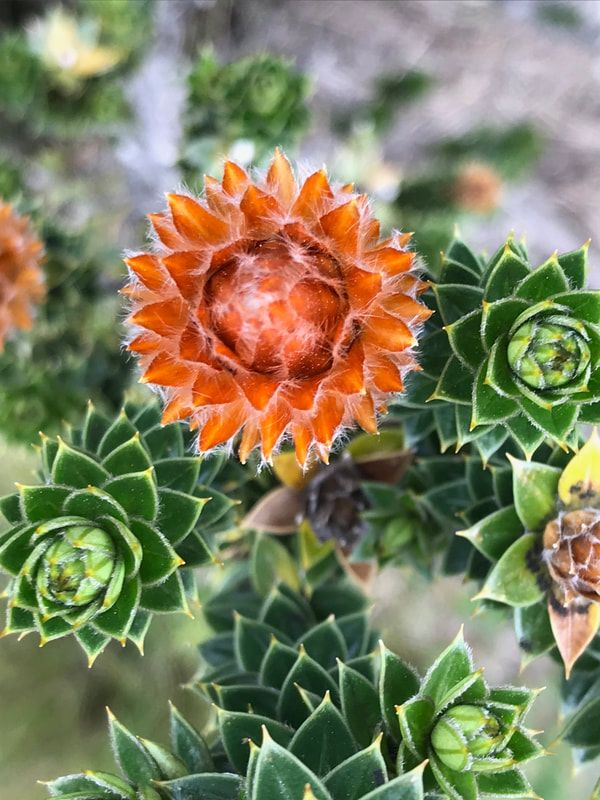

My research falls broadly under life history evolution: how organisms reproduce and die, and how they allocate resources across their lives to different traits. I also look at how these traits have evolved across lineages, to identify the broader drivers of their complexity.
Theme 1
Vertebrate life histories
Black grouse Lyrurus tetrix
Black grouse are a lekking gamebird found across Eurasia. Though reasonably common in the north, southern and western populations are locally threatened. They are relatively short-lived, male reproduction is extremely skewed (few males ever mate), and males express a suite of sexual traits and behaviours, which makes them a long-standing model for sexual selection.
In 2001 the late Prof. Rauno Alatalo and Dr Heli Siitari of the University of Jyväskylä began a long-term study of black grouse in central Finland. It has built a dataset of individual records of phenotype, behaviour and physiology that lets us address key questions in life history evolution and sexual selection.
Current work has three themes: the inbreeding and genomics of male fitness and sexually selected traits; the role of physical activity in individual ageing rates; and the epigenetic basis of sexual ornament expression. Future work will look at the impact of hunting and climate change on individual life histories.
Theme 2
Plant life histories

I'm interested in the selective pressures that shape plant life histories through plant–animal interactions and the environment. With Dr Sandra Varga I study the evolutionary ecology of sexually dimorphic plants, including their relationships with arbuscular mycorrhizal fungi (AMF), pollinators and herbivores. Ongoing work covers the effect of AMF on DNA methylation and the environmental drivers of plant sex ratios, as well as how current and future environmental change (climate, pollution, UV radiation) affects plant life histories.
Theme 3
Insect life histories
Working with vertebrates in the wild is challenging, so I also use insects in the lab to test key hypotheses about how pre- and post-copulatory traits and life histories evolve. Recent work uses the lekking lesser wax moth to examine pre- and post-copulatory trade-offs, and crickets to study biomechanical senescence. I also collaborate with Prof. Fernando Montealegre-Z on katydid hearing.
I'm especially interested in how sperm have evolved, and how their myriad shapes are constrained or shaped by the fertilising environment. This work is funded by the Human Frontier Science Program (HFSP); see the project website.